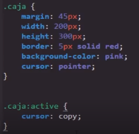

Se trata de todas aquellas propiedades enfocadas a añadir mayor complejidad a los estilos CSS
Propiedades
Opacity
-
Esta propiedad produce una trasparencia en el elemento en cuestión, para definir la intencidad de esta se utiliza cualquier valor entre 0 y 1, donde 0 es completamente trasparente y 1 es completamente bicible.

Noa: Esta propiedd puede aceptar tantos decimaes como se desee
Nota: una forma de abreviar los decimales en CSS es definir el valor como ".5" en vez de "0.5", ya que el navegador entiende que antes del punto corresponde un "0"
Cursor
-
Esta porpiedad cambiar el tipo de cursor al posicionarse sobre el elemento, se puede aplicar en cualquier Pseudo-Clase o propiedad con conpleta normalidad, es importante tener presente, que esta propiedad no hace que el cursor desempeque la función que pueda simbolizar, simplemente es el recurso visual.
Por lo general los navegadore vienen por si mismos integrados con la mayoria e incluso la totalidad de tipos de cursores, aún así el listado completo de estos se puede encontrar facilmente en internet buscando "lista de valor cursor CSS" o ingresando a la guía de w3schools
Ejemplo
 Resize
-
Esta propiedad permite que el usuario pueda modificar el tamaño de algunos elementos, otros lo incluyen por defecto como por ejemplo el textarea, posee varios valores aplicables a aqyellos elementos que acptan esta propiedad
Boht: Perrmite que se modifique las dimenciones verticales y orizontales del elemento
Vertical: Unicamente permite que se modifiquen las dimenciones verticales del elemento
Horizontal: Unicamente permite que se modifiquen las dimenciones horizotales del elemento
None: Este valor desactiva por completo esta propiedad inpidiendo que se puedan modificar las dimanciones del elemento, se utiliza espesificamete en los elementos que incluyen esta propiedad por defecto